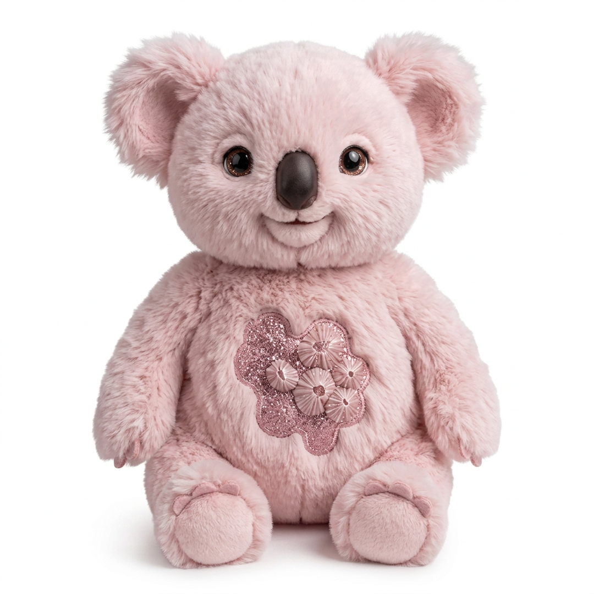

Real projects. Better AI. No prompt theater.
Learn to get the most out of your AI assistant 🐨 Real workflows. Zero fluff. Lessons dropping soon.
▶ Watch on YouTubeBRAVE is the signature method behind every lesson — five habits that turn an AI assistant from a chat window into a capable collaborator.
Say what finished looks like, who it is for, and the format you need.
Supply the facts, constraints, prior decisions, examples, and source material that change the answer.
Distinguish research from sending, drafting from publishing, and reversible work from consequential work.
Ask for source links, read primary records, inspect rendered files, test deployments, and reconcile counts.
Preserve useful decisions, templates, and lessons so the next run starts smarter.
The channel's promise in one lesson: the BRAVE method shown through seven real projects — mining-claim research, text-message patterns, airline points, vineyard media production, music albums, shipped apps, and business operations. Software engineer Chris Pick shows how a vague request becomes a brief, how an agent researches and builds, and the two questions to always answer: what does done look like, and what evidence would make you trust it?
Watch the seriesEvery episode is anchored in work Chris has actually done with Clingy Bear — a practical capability ladder from first brief to capstone ship.
The BRAVE method through seven real projects.
Context and continuity through the mining-claim story.
Evidence-first BLM, land, and genealogy research.
Privacy-safe SMS sentiment analysis over time.
Travel constraints, points, routes, and verification.
The AI Vineyard media workflow.
Creative direction, generation, selection, and release.
Ground School Trainer and NeuroSpicy.
VMenu's research, imports, audits, and deployment.
24 Legs, maximusPoints, and operations.
Delegation, durable memory, and background work.
Permissions, privacy, failure recovery, and the capstone.
Lessons land on YouTube first, with clips and updates across the other channels.